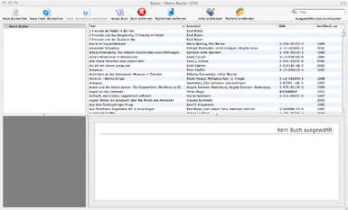

Was ist Books?
Books ist eine Anwendung, die nativ auf Mac OS X läuft und Ihnen
bei der Erstellung und Verwaltung von Büchern, die Sie besitzen,
helfen soll.
Books bietet Ihnen dabei eine Oberfläche, die an iTunes
erinnert. Sie arbeiten
mit Bücherlisten und Einträgen. Bücherlisten enthalten Einträge,
die aus den Informationen bestehen, die ein bestimmtes Buch beschreiben.
Mit der Hilfe von Books können Sie schnell Ihre vorhandene Büchersammlung
katalogisieren. Dabei helfen Ihnen auch die Erweiterung für die Datenabfrage
bei Amazon, der Library of Congress und vielen anderen Quellen. Eine Erweiterung
ist
eine
kleine
Anwendung
oder ein kleines Script, daß zwischen Books und den jeweiligen Datenbanken
vermittelt
und für einen reibungslosen Informationsaustausch sorgt. Möchten Sie,
daß Books Kontakt zu anderen Datenbanken aufnimmt, so können Sie auch
selbst eine Erweiterung für diese spezielle Datenbank schreiben.
Books nutzt ebenfalls Erweiterungen, um die Informationen Ihrer Sammlung darzustellen
und zu exportieren. Sie können mit Books eine Kopie Ihrer Einträge
für den iPod, in eine Textdatei oder auch für einen Server exportieren.
Innerhalb der Anwendung werden Erweiterungen genutzt, die auf HTML- und CSS-Dateien
aufbauen, um Informationen und die Zusammenfassung darzustellen.
Books ist eine Open-Source-Anwendung, die kostenlos im Internet zur Verfügung
gestellt wird. Sie müssen sich keine Sorgen um Seriennummern machen.

Einige Beispiele, wozu Books nützlich sein kann:
- Sie besitzen sehr viele Bücher, die in verschiedenen Regalen stehen. Um einen besseren Überblick über Ihre private Bibliothek zu haben, tragen Sie diese in Books ein. Sie können aber nicht nur den Titel, Autoren, ISBN und Verlag angeben, Sie können auch gleich das dazugehörige Titelbild einfügen und auch noch den Standort vermerken.
- Oder sind Sie vielleicht Buchhändler, der genau wissen muß, wo seine Bücher stehen und wann er bestimmte Exemplare eines Buches nachbestellen muß? Books bietet Ihnen die Möglichkeit, anzugeben, an welchem Standort Ihre Bücher stehen und wieviele Exemplare davon noch vorhanden sind.
- Sie lesen sehr viele Bücher und möchten nicht vergessen, wie Ihnen ein Buch gefallen hat? Was im Internet schon lange möglich ist, funktioniert auch mit Books: Sie können selbst Rezensionen zu einem Buch verfassen und das Buch gleichzeitig bewerten.